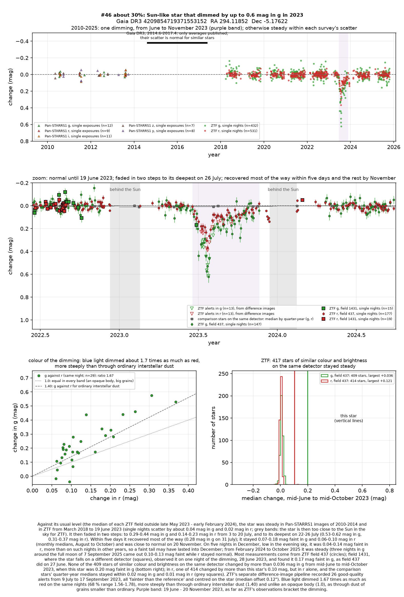
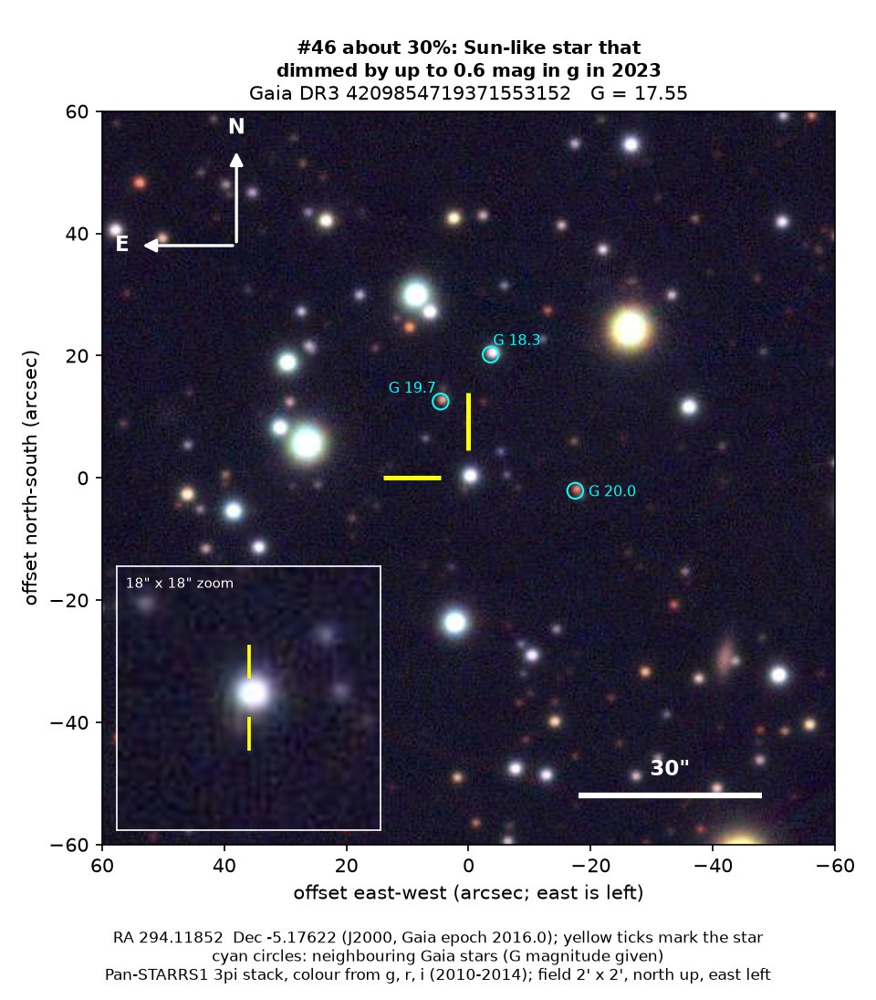
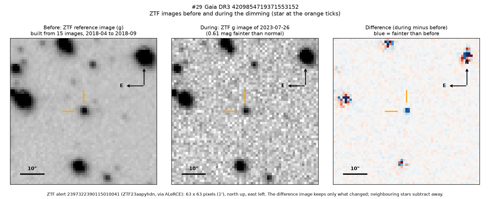

Professor of Mathematics
Paata Ivanisvili
Department of Mathematics, University of California, Irvine

Candidate 46: a Sun-like star that dimmed for five months in 2023
Why this estimate. The dimming is almost certainly real: the ZTF survey telescope at Palomar Observatory in California recorded it in two colours and on two detectors, while 409 stars of similar colour and brightness on the main detector stayed steady in green light. Its start, deepest part and recovery were all observed, and the star shows no sign of youth. But only ZTF recorded it, one comparison star changed in red light, the star’s type and distance are uncertain, and there is no spectrum.
How to read the pictures. The finder chart shows a patch of sky two arcminutes across, about a fifteenth of the Moon’s width, with north up and east to the left. The star sits between the two yellow ticks, and the white bar is 30 arcseconds long. On a light curve the vertical axis is magnitude, a brightness scale on which larger numbers mean fainter stars, and it is drawn so that down means fainter. Purple shading marks the dimming, and grey shading the months when the star could not be observed. Each survey uses slightly different filters, so each is compared with its own normal level. The ZTF pictures show ZTF’s reference image of the star, an image taken during the dimming, and the difference between the two, in which only what changed remains: blue means fainter and red brighter.

What changed. The star is Sun-like, probably a little hotter and larger than the Sun, about 2,600 to 2,900 parsecs (8,400 to 9,400 light-years) away and about 600 parsecs below the Milky Way’s mid-plane. ZTF saw it steady from 2018 until 19 June 2023. It then faded in two steps over five weeks, and on 26 July it had lost 44 per cent of its green light; two nights earlier it had lost 29 per cent of its red light. Within five days it recovered most of the way, then slowly returned to normal by 20 November, and it has been steady since February 2024. ZTF’s alert system, which compares each new image with a reference image, flagged it 26 times from July to September 2023.
Why it might matter. Fine dust passing in front of the star is the likeliest cause. Green light dimmed 1.67 times as much as red: ordinary interstellar dust gives about 1.40, starspots on a Sun-like star about 1.1 to 1.2, and an opaque body would dim all colours equally. Only grains smaller than average give so steep a colour. Spots on Sun-like stars that are no longer young rarely dim them by more than a few hundredths of a magnitude, an eclipse by another star lasts hours or days, not months, and the second detector argues against an instrumental fault.
The star shows no sign of youth: it lies far outside the thin layer of the Milky Way where young stars are found, has no warm dust, shows hydrogen in absorption in Gaia’s spectra and moves about 50 km/s differently from the stars around it, as old stars often do. Such fine grains are blown out of a planetary system within about an orbit, so dust orbiting the star would have to be fresh, as from a recent collision. A spectrum would settle the star’s type and distance.
No record of the dimming could be found. SIMBAD has no entry for the star, Gaia lists no variability, and VSX, the variable-star index, has nothing within 30 arcseconds. It is in no variable-star catalogue consulted, nor among the dimming stars of Tzanidakis et al. (2025), and there is no Transient Name Server entry, Gaia alert or paper giving its Gaia number. ZTF’s alert system holds only machine-generated classifications for it.
- Star
- Gaia DR3 4209854719371553152, a Sun-like star of spectral type about F8 to G0
- Location
- RA 294.11852°, Dec −5.17622° (J2000), in Aquila, 12.4 degrees south of the Milky Way’s mid-plane
- Distance
- about 2,600 to 2,900 parsecs (8,400 to 9,400 light-years)
- Brightness
- Gaia G = 17.55, far too faint for the eye or a small telescope
- Probability
- This candidate is unconfirmed. The percentage under the title is an estimate of the chance that it is a real, previously unrecorded case of the kind described. The estimate has not been checked by outside experts. See the introduction to all fifty-eight candidates.
- Caveat
- There is no spectrum, and no infrared measurement was made during the deep part of the dimming. Nearly all the measurements come from one ZTF detector, where one comparison star changed by 0.12 magnitudes in red light alone, so the red changes and the colour are less certain than the green. The parallax is measured to only about 28 per cent, and Gaia’s own model of the star disagrees with it.

